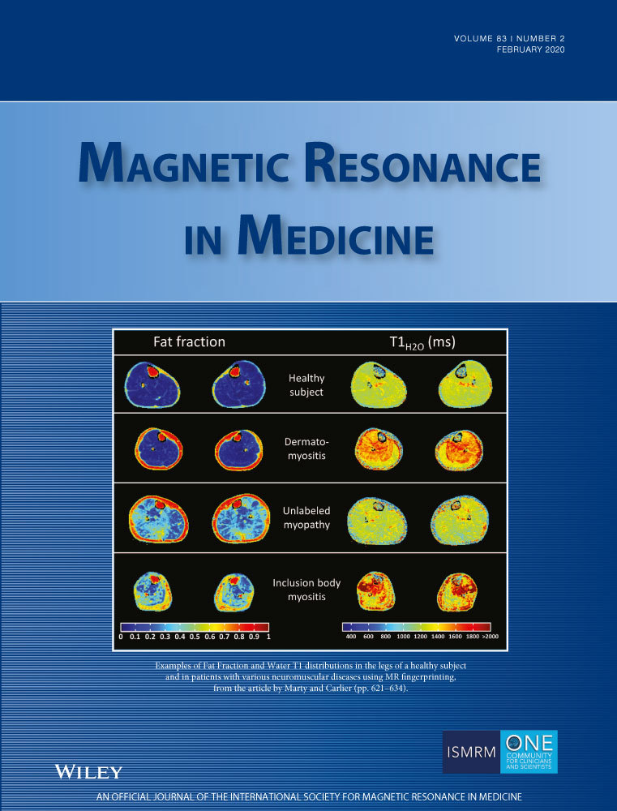

Hui Xue1 | Louise A.E. Brown2 | Sonia Nielles‐Vallespin3 | Sven Plein2 | Peter Kellman1
1National Heart, Lung and Blood Institute, National Institutes of Health, Bethesda, Maryland
2Multidisciplinary Cardiovascular Research Centre (MCRC) & Leeds Institute of Cardiovascular and Metabolic Medicine, University of Leeds, Leeds, United Kingdom
3Royal Brompton Hospital, London, United Kingdom

⚠ Note:
Paper: https://onlinelibrary.wiley.com/doi/abs/10.1002/mrm.27954
Code: https://github.com/xueh2/QPerf
Hui Xue, National Heart, Lung and Blood Institute, National Institutes of Health, 10 Center Drive, Bethesda, MD 20892. Email: hui.xue@nih.gov
Supported by the National Heart, Lung and Blood Institute, National Institutes of Health.